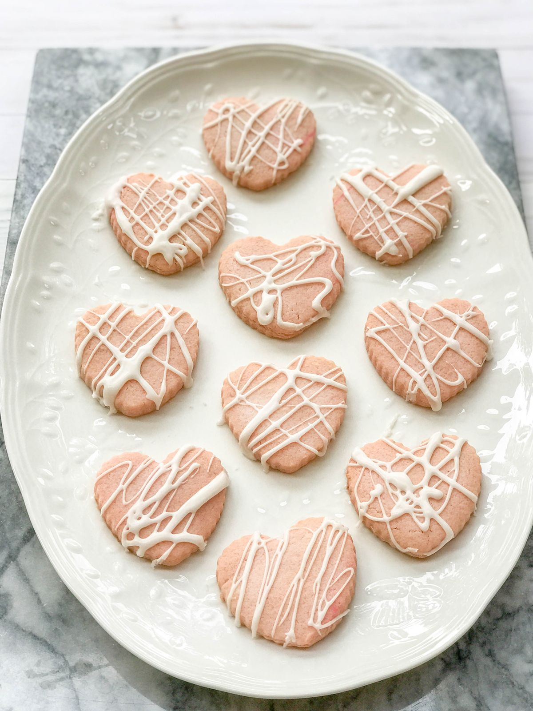

Raspberry Biscuits for Dogs

These wholesome Raspberry Biscuits are a delightful treat for your
furry friend! Made with fresh raspberries, coconut oil, egg, and oat flour,
these biscuits are both delicious and nutritious. The glaze,
crafted from honey, water, and cornstarch, adds a sweet touch
that will have your dog wagging their tail in delight. Perfect for
rewarding your pet with a tasty, all-natural snack!
Ingredients for Biscuits
- 1/2 cup raspberries
- 1/2 cup coconut oil
- 1 egg
- 1 3/4 cups oat flour, plus more for dusting
Ingredients for Glaze
- 2 tbsps water
- 1 tbsp honey
- 1/4 cup cornstarch
Steps
- To make the biscuits: Preheat the oven to 350°F.
Line a baking sheet with parchment paper or a silicone baking mat.
Set a cooling rack over a sheet of parchment paper.
- In a medium bowl, mix the raspberries, coconut oil, and egg until
the raspberries has broken down and the ingredients are well combined.
Add the flour and mix just until combined.
- On a lightly floured surface, roll out the dough to 1/4 inch thick.
Use a cookie cutter to cut the shapes and transfer them to the prepared
baking sheet.
- Bake until the biscuits start to brown at the edges, 15 to 20 minutes.
Let cool completely.
- Meanwhile, make the glaze: In a small bowl, whisk
together the water, honey, and cornstarch until well combined.
- When the biscuits have cooled completely, transfer them to the
prepared cooling rack and drizzle the glaze over them, letting the
excess glaze drip onto the parchment paper underneath. Let the
drizzle set before serving or storing.
- Store in an airtight container for up to 1 week.
Home